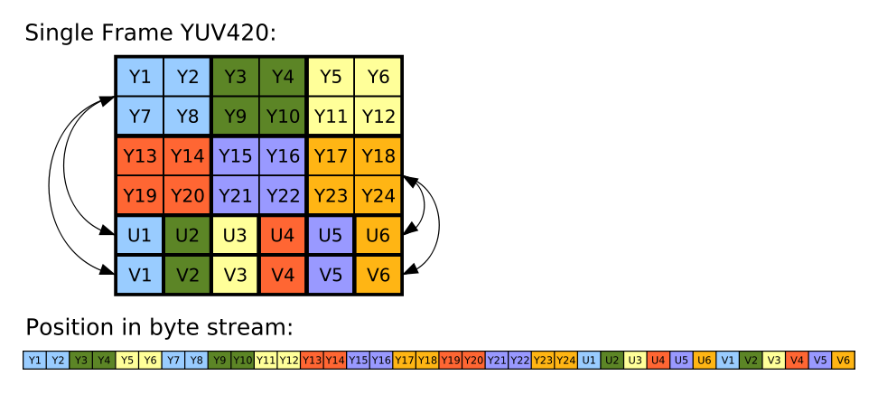

YUV 数据格式详解
YUV 数据格式概览
YUV 的原理是把亮度与色度分离，使用 Y、U、V 分别表示亮度，以及蓝色通道与亮度的差值和红色通道与亮度的差值。其中 Y 信号分量除了表示亮度 (luma) 信号外，还含有较多的绿色通道量，单纯的 Y 分量可以显示出完整的黑白图像。U、V 分量分别表示蓝 (blue)、红 (red) 分量信号，它们只含有色彩 (chrominance/color) 信息，所以 YUV 也称为 YCbCr，C 意思可以理解为 (component 或者 color)。
维基百科上的 RGB 转 YUV 的公式能更好的反应 YUV 与 RGB 的关系，以及为什么称为 YCbCr：
Y 中含有三元色色信息，且有较多的 G，所以他们一起可以显示出全彩的图像。
很显然我们可以想到是不是会有 YCgCb、YCgCr 等，针对不同的应用场景，也确实有相关应用研究。
如下图，一张从上到下分别为原图、Y、U 和 V：
采用 YUV 而不是使用 RGB，既有历史原因：为了兼容老式黑白电视，因为 YUV 如果只输出 Y 就成了黑白图像了。也有 YUV 自己的其他优点，例如可以根据需要，采用特定的 YUV 存储格式，以降低祼码流的空间占用。
YUV 存储格式
YUV 存储格式有两大类：planar 和 packed。
对于 planar 的 YUV 格式，先连续存储所有像素点的 Y，紧接着存储所有像素点的 U，随后是所有像素点的 V。相当于将 YUV 拆分成三个平面 (plane) 存储。
对于 packed 的 YUV 格式，每个像素点的 Y,U,V 是连续交替存储的。
YUV 码流又根据不同的采样方式分为 YUV4:4:4、YUV4:2:2、YUV4:2:0、YUV4:1:1 等存储格式，其中前 3 种较常见。所谓采样意思就是根据一定的间隔取值。其中的比例是指 Y、U、V 表示的像素，三者分别占的比值。可以按照如下方式理解，实现存储和扫描与 DVD 的扫描线有关。
例如：
YUV4:4:4是指每个像素分别有一个 Y、一个 U 和一个 V 组成，即每 4 个 Y 采样，就对应 4 个 Cb 和 4 个 Cr 采样，也就是一个像素占用8+8+8=24位，这种存储方式图像质量最高，但空间占用也最大，空间占用与 RGB 存储时一样。对于一个M*N分辨率的图像，该模式下存储空间占用字节数为M*N*3。YUV4:2:2是指每 4 个 Y 采样，对应 2 个 Cb 和 2 个 Cr 采样，这样在解析时就会有一些像素点只有亮度信息而没有色度信息，缺失的色度信息就需要在解析时由相邻的其他色度信息根据一定的算法填充。这种方式下平均一个像素占用空间为8+4+4=16位。对于一个M*N分辨率的图像，空间占用16/24，即M*N*3*(16/24) = M*n*2个字节。YUV4:2:0是指每 4 个 4 采样，对应 2 个 U 采样或者 2 个 V 采样，注意其中并不是表示 2 个 U 和 0 个 V，而是指无论水平下采样还是垂直下采样，色度采样都只有亮度的一半。该存储格式下，平均每个像素占用空间为8+4+0=12位。对于一个M*N分辨率的图像来说，空间占用为原来的12/24，即M*N*3*(12/24)=M*N*3/2。节省较多存储空间，该存储格式也最常用。YUV4:1:1是指每 4 个 Y 采样，对应 1 个 U 采样和一个 V 采样。平均每个像素占用空间为8+2+2=12位。图像空间占用情况同上。这种存储格式实际使用的非常少。
对于 packed 存储格式，可以理解 YUV 内存模型如下图：

YV12/I420/YU12/NV12/NV21
YV12/I420/YU12/NV12/NV21 都属于 YUV 4:2:0。YU12 就是 I420，YV12/I420 也称为 YUV420P（即平面格式，planar），YV12 与标准模式 I420 的区别是 UV 顺序不同。
YV12 取名来源是 Y 后面紧跟 V（然后是 U），12 表示它位深为 12，也就是一个像素占用空间为 12 位。
在 I420(YU12) 格式中，U 平面紧跟在 Y 平面之后，然后才是 V 平面（即：YUV）；但 YV12 则是相反（即：YVU）。大部分视频解码器的输出的原始图像都是 I420 格式（例如安卓下的图像通常都是 I420 或 NV21），而多数硬解码器中使用的都是 NV12 格式（例如 Intel MSDK、NVIDIA 的 cuvid、IOS 硬解码）。
另一类 YUV420SP, Y 分量平面格式，UV 打包格式，即 NV12。 NV12 与 NV21 类似，U 和 V 交错排列，不同在于 UV 顺序。
可理解如下：
1 | I420: YYYYYYYY UU VV => YUV420P |
维基百科上有两张 I420 和 NV12 的两张图非常好：
I420 的单帧结构示意图如下（Planar 方式）：

这幅图的上面一幅可以看出 Y1、Y2、Y7、Y8 共用 U1 和 V1。后面的线性数组为其存储顺序，可以看出 Y、U 和 V 都是顺序存储的，往外写的时候，先按顺序将 Y 分量写出，然后再根据 U、V 分别将它们依次写出即可。
NV12 的单帧结构示意图如下（Planar 方式）：

可以看出与 YV12 不同的时，它的 Y 虽然也是顺序存储，但 U、V 却是交错存储的，这种方式存储在往外写出时则先直接顺序写出 Y，然后对 UV 分别